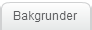
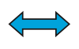
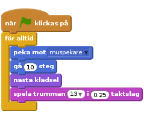
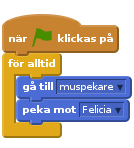
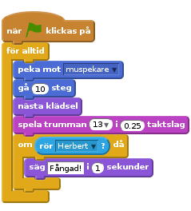
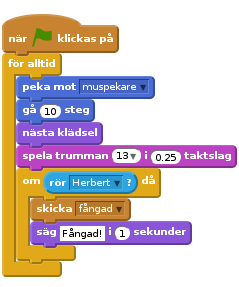
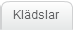
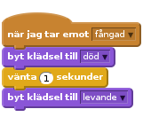
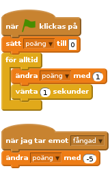

Introduktion
Vi ska skapa ett spel där katten Felicia ska försöka ta musen Herbert. Du kontrollerar Herbert med muspekaren och försöker undvika att bli fångad av Felicia. Ju längre du håller dig ifrån honom desto fler poäng får du, men se till att inte åka fast för då går poängen ner igen!
STEG 1: Felicia följer muspekaren
Checklista
- Skapa ett nytt projekt.
- Klicka på Scen bredvid sprajten och byt till fliken
Bakgrunder. - Klicka på
Välj bakgrund från biblioteketoch välj sedan bakgrunden Inomhus/hall (eller annan). - Radera den ursprungliga tomma bakgrunden.
- Klicka på sprajten. Klicka sedan på i övre vänstra hörnet. Byt namn på sprajten till Felicia.
- Se till att Felicia bara pekar åt vänster-höger genom att klicka på den här knappen: 
- Skapa följande skript:

Testa ditt projekt
Klicka på den gröna flaggan.
- Följer Felicia muspekaren?
- Ser det ut som att hon går när hon rör sig?
- Rör hon sig i rätt hastighet?
Spara ditt projekt
STEG 2: Felicia jagar Herbert
Nu vill vi att Felicia ska jaga musen Herbert istället för muspekaren.
Checklista
- Skapa en ny sprajt genom att klicka på
Välj ny sprajt från biblioteketoch välj Djur/mouse1. - Byt namn på sprajten till Herbert.
- Byt klädsel och gör den mindre än Felicia genom att klicka på knappen
Förminska: och sedan direkt på Herbert i händelsefönstret några gånger. - Se till så att Herbert bara pekar åt vänster-höger genom att klicka på den här knappen:
- Se till att sprajten Herbert är vald och ge honom det här skriptet:

Testa ditt projekt
Klicka på den gröna flaggan.
- Rör sig Herbert med muspekaren?
- Jagar Felicia Herbert?
Spara ditt projekt.
STEG 3: Felicia säger till när hon har fångat Herbert
Vi vill att Felicia ska veta när hon har fångat Herbert, och säga det till oss.
- Ändra Felicias skript så det ser ut såhär:

Testa ditt projekt
Klicka på den gröna flaggan.
- Säger Felicia till när hon har fångat Herbert?
Spara ditt projekt
STEG 4: Herbert blir ett spöke när han fångas
Istället för att Felicia säger någonting så vill vi att Herbert ska förvandlas till ett spöke när han fångas.
Checklista
- Ändra i Felicias skript så att det skickar ut följande meddelande när hon fångar Herbert. I blocket ´skicka´ behöver du skriva in ett meddelande, i det här fallet fångad.

- Importera en ny klädsel till Herbert genom att markera honom, klicka på fliken
Klädslar, sedan påVälj klädsel från biblioteketoch välj Fantasy/ghost2-a. - Gör den nya spökklädseln mindre med knappen
Förminskasom tidigare: - Byt namn på Herberts klädslar så att musklädseln heter levande och spökklädseln heter död (det gör man i övre delen av ritfönstret).
- Skapa ett nytt skript till Herbert så att han kan förvandlas till spöke:

Testa ditt projekt
Klicka på den gröna flaggan.
- Blir Herbert ett spöke när han fångas?
- Står Felicia still tillräckligt länge för att Herbert ska kunna ge sig iväg?
Spara ditt projekt
STEG 5: Räkna poäng
__Nu lägger vi till ett poängsystem så vi vet hur bra vi är på att hålla Herbert vid liv.
Vi börjar med att låta poängen vara noll och höjer den med ett varje sekund. Om Felicia fångar Herbert minskar vi poängen med fem.__
Checklista
- Gå till fliken
Skriptoch väljData. Skapa en variabel som heter poäng för alla sprajter. - Markera Scenen och skapa de här två skripten:

Testa ditt projekt
Klicka på den gröna flaggan.
- Ökas pängen med ett varje sekund?
- Minskas poängen med fem när Herbert fångas?
- Vad händer när Herbert fångas innan poängen har blivit fem?
- Nollställs poängen när du startar om spelet?
Spara ditt projekt
Bra jobbat, nu är du klar och kan spela spelet!
Glöm inte att du kan dela spelet med dina kompisar genom att klicka på Dela i menyn.